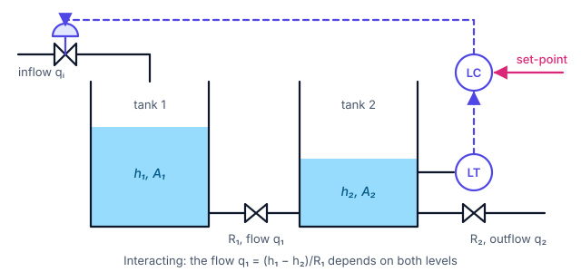
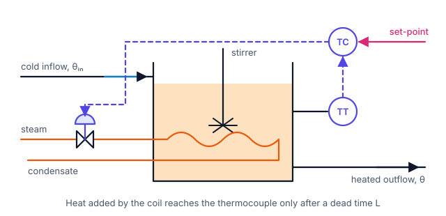
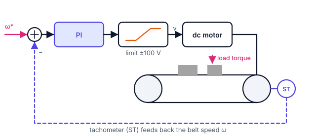
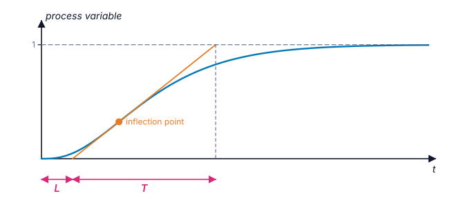

How to use this page
- Read the problem and look at the diagram. Before you touch a slider, predict what will happen.
- Start with the preset buttons. They show the main lesson of each simulation in one click.
- Each simulation gives MATLAB code for the same settings, so you can check the result in the lab.
Example values The models follow the textbooks cited under each simulation. The numbers (tank sizes, motor constants, time constants) are example values chosen for teaching. They are realistic in size but are not data from a particular plant.
Level control of a tank that drains through a valve
Problem. A storage tank is filled through a control valve and drains through an outlet valve to the next unit. The level must stay at its set-point when the operator changes the set-point and when the downstream unit suddenly draws more liquid.

Mass balance, with the outflow through the outlet valve following Torricelli's law:
$$A\frac{dh}{dt} = q_{in} - q_{out}, \qquad q_{in} = q_{max}\frac{v}{100}, \qquad q_{out} = k\,\sqrt{h}$$
This is nonlinear because of $\sqrt h$. Near an operating level $h_0$, the outlet behaves like a linear flow resistance $R = 2\sqrt{h_0}/k$, so the tank becomes the first-order system $H(s)/Q_{in}(s) = R/(ARs + 1)$ with time constant $\tau = AR$. The time constant grows with the level, which is why one fixed set of controller gains behaves differently at different levels. The inlet valve has a 3 s lag, and a PI controller with anti-windup sets the valve between 0 % and 100 %.
Interactive simulation
Sources. Liquid-level model and flow resistance: D'Azzo, Houpis and Sheldon (2003), Section 2.11. Linearisation about an operating point: Nise (2015), Section 2.11. Offset under P control and integral action: Nise (2015), Section 9.2. Integrator anti-windup: Åström and Hägglund (1995), Chapter 3.
Questions to think through
- With P only, the level settles below the set-point. Use the steady-state mass balance to explain why, and why a larger $K_c$ makes the offset smaller but never zero.
- Press "PI too aggressive". Why does the level oscillate, and what happens to the valve?
- Make the tank area 4 m². How do the time constant and the response change, and why?
- Set the new set-point to 0.5 m and then to 3.5 m with the same PI gains. Is the response the same? Explain with the linearised time constant.
Two interacting tanks
Problem. Two tanks are joined by a pipe at the bottom. Liquid enters tank 1, flows through the pipe into tank 2 and leaves tank 2 through an outlet. The level of tank 2 must be controlled by changing the inflow to tank 1.

With linear flow resistances ($q = \Delta h/R$), the mass balances of the two tanks are
$$A_1\frac{dh_1}{dt} = q_i - \frac{h_1 - h_2}{R_1}, \qquad A_2\frac{dh_2}{dt} = \frac{h_1 - h_2}{R_1} - \frac{h_2}{R_2}$$
Taking $x_1 = h_1$, $x_2 = h_2$ and $u = q_i$ gives a two-state model. Eliminating $h_1$ gives
$$\frac{H_2(s)}{Q_i(s)} = \frac{R_2}{R_1R_2A_1A_2\,s^2 + (R_1A_1 + R_2A_1 + R_2A_2)\,s + 1}$$
The poles are always real and distinct (the damping ratio is always above 1), so the open-loop step response never overshoots. The flow between the tanks depends on both levels, which is what "interacting" means.
Interactive simulation
Sources. Model and state equations: D'Azzo, Houpis and Sheldon (2003), Section 2.11, Eqs. (2.116)–(2.121). Second-order step response and the overdamped case: Nise (2015), Sections 4.5 and 4.6. State-space form: Nise (2015), Section 3.4.
Questions to think through
- Derive the transfer function above from the two mass balances. Check your answer against the time constants the simulation prints.
- Show that the damping ratio is always greater than 1 for any positive $A_1$, $A_2$, $R_1$, $R_2$.
- Why does $h_1$ rise first and $h_2$ follow with an S-shaped curve? What would a reaction-curve test (Simulation 5) give for this process?
- Switch to PI control and raise $K_c$. Why can a second-order process with a PI controller overshoot even though the open loop never does?
Temperature control of a steam-heated tank
Problem. Liquid flows through a stirred tank and is heated by steam in a coil. A thermocouple measures the tank temperature and a controller moves the steam valve. The temperature must follow a set-point step from 50 °C to 60 °C and must recover when the incoming liquid suddenly becomes colder.

Treating the well-stirred liquid as one thermal capacitance $C$ that loses heat through a thermal resistance $R$ (heat balance: heat in = heat stored + heat carried away):
$$RC\frac{d\theta}{dt} + \theta = \theta_{in} + R\,K_Q\,v(t - L)$$
Here $RC = 300$ s, the steam valve adds 0.5 °C per % opening at steady state, and the valve and thermocouple each add a small lag (5 s and 10 s). The dead time $L$ is the time the heat takes to mix through the tank and reach the thermocouple. Dead time adds phase lag without changing the gain, so it is the main thing that limits how fast the loop can be.
You can choose on/off control with a hysteresis band (as in a simple thermostat), P, PI or PID. The derivative acts on the measured temperature, not on the error, so a set-point step does not give a "derivative kick".
Interactive simulation
Sources. The process and its block diagram: D'Azzo, Houpis and Sheldon (2003), Section 5.2, Example 1 ("A temperature control system"). Thermal capacitance and resistance: D'Azzo, Houpis and Sheldon (2003), Section 2.9. Effect of a time delay on phase: Nise (2015), Section 10.12. On/off control, derivative on measurement and anti-windup: Åström and Hägglund (1995), Chapter 3.
Questions to think through
- With on/off control the temperature keeps cycling. How do the hysteresis band and the dead time each change the size of the cycle?
- Increase the dead time from 20 s to 60 s with the PID preset. What happens, and how far must you lower $K_c$ to get a calm response again?
- Why does P control leave an offset after the inlet becomes colder, while PI does not?
- Compare the IAE of P, PI and PID. Which part of the response (set-point step or disturbance) does derivative action help most here?
Conveyor drive speed control with a voltage limit
Problem. A dc motor drives a conveyor belt. A PI controller sets the armature voltage, which the drive can only supply up to ±100 V. The belt must reach its speed quickly and hold it when material is dropped on the belt.

Armature circuit and shaft (inertia $J$ includes the belt and load, reflected to the motor shaft):
$$L_a\frac{di_a}{dt} = v - R_a i_a - K_b\,\omega, \qquad J\frac{d\omega}{dt} = K_t\, i_a - D\,\omega - T_L$$
Example values: $R_a = 1\ \Omega$, $L_a = 0.01$ H, $K_t = K_b = 0.5$, $D = 0.05$ N·m·s/rad, $J = 0.02 + J_{load}$. With the 100 V limit the motor can never run faster than $100/K_b = 200$ rad/s, and less than that under load. When the voltage is at its limit, the integral term keeps growing unless it is stopped: this is integrator windup, and it causes a large overshoot once the speed finally arrives.
Interactive simulation
Sources. Armature-controlled dc motor model: Nise (2015), Section 2.8, and D'Azzo, Houpis and Sheldon (2003), Section 2.13. Reflecting the load through gears: Nise (2015), Section 2.7. Actuator saturation: Nise (2015), Section 4.9. Integrator windup and anti-windup: Åström and Hägglund (1995), Chapter 3.
Questions to think through
- Compare anti-windup on and off at a set-point of 100 rad/s. Why is the overshoot so much bigger with it off?
- Press "P only" and add the load. Use the steady-state motor equations to find the speed drop you expect, and compare with the simulation.
- Press "Heavy load at high speed". Does the motor still reach the set-point? Use the 100 V limit, the load torque and the steady-state motor equations to explain.
- The MATLAB code ignores the voltage limit. When does the linear model give the same answer as the simulation, and when not?
PID tuning workbench: reaction curve and tuning rules
Problem. A new loop must be tuned on site. The engineer puts the controller in manual, steps the valve, records the process reaction curve and uses a tuning rule to get first settings. Compare three well-known rules on three typical processes.

Each process is a gain, a dead time and two or three lags, $G(s) = K e^{-\theta s}/\prod(\tau_i s + 1)$. The workbench draws the tangent at the steepest point of the step response and reads the apparent dead time $L$ and time constant $T$, as you would on a chart recorder. The controller is the ideal (ISA) PID, $u = K_c\left[e + \frac{1}{T_i}\int e\,dt - T_d\frac{dy}{dt}\right]$.
| Rule | $K_c$ | $T_i$ | $T_d$ |
|---|---|---|---|
| Ziegler–Nichols, reaction curve | $1.2\,T/(KL)$ | $2L$ | $0.5L$ |
| Cohen–Coon | $\frac{T}{KL}\left(\frac43 + \frac{L}{4T}\right)$ | $L\,\frac{32 + 6L/T}{13 + 8L/T}$ | $L\,\frac{4}{11 + 2L/T}$ |
| AMIGO | $\frac{1}{K}\left(0.2 + 0.45\frac{T}{L}\right)$ | $L\,\frac{0.4L + 0.8T}{L + 0.1T}$ | $\frac{0.5LT}{0.3L + T}$ |
The closed-loop test applies a set-point step at $t = 0$ and a load disturbance halfway through the run. Use the gain multiplier to "detune" a rule: many plants run their loops at 50 % to 70 % of the Ziegler–Nichols gain.
Interactive simulation
Sources. Reaction-curve method: Ziegler and Nichols (1942). Cohen–Coon rule: Cohen and Coon (1953). AMIGO rule: Åström and Hägglund (2006), Chapter 7. PID control and tuning: Nise (2015), Section 9.4, and Åström and Hägglund (1995).
Questions to think through
- For each process, which rule gives the smallest overshoot and which the smallest IAE? Is it the same rule for all three processes?
- The Ziegler–Nichols rule was designed for a quarter-amplitude decay. Do you see that in the closed-loop plot? What gain multiplier gives an overshoot below 10 %?
- The column tray process has a large $L/T$. Why do all the rules give a lower gain for it, and why is its response still slow?
- The tangent method gives only an approximate $L$ and $T$. Change the process and see how far the tangent model is from the real curve. How would this error affect the tuning?
References
- Åström, K. J. and Hägglund, T. (1995). PID Controllers: Theory, Design, and Tuning, 2nd ed. Research Triangle Park, NC: Instrument Society of America.
- Åström, K. J. and Hägglund, T. (2006). Advanced PID Control. Research Triangle Park, NC: ISA, The Instrumentation, Systems, and Automation Society.
- Cohen, G. H. and Coon, G. A. (1953). Theoretical consideration of retarded control. Transactions of the ASME, 75, 827–834.
- D'Azzo, J. J., Houpis, C. H. and Sheldon, S. N. (2003). Linear Control System Analysis and Design with MATLAB, 5th ed., revised and expanded. New York: Marcel Dekker.
- Nise, N. S. (2015). Control Systems Engineering, 7th ed. Hoboken, NJ: John Wiley & Sons.
- Ziegler, J. G. and Nichols, N. B. (1942). Optimum settings for automatic controllers. Transactions of the ASME, 64, 759–768.
The diagrams were drawn for this course. The simulations are computed in your browser with a fourth-order Runge–Kutta method (the tuning workbench uses exact discrete steps for each lag); the dead time is a delay buffer of past controller outputs.